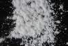

|
|
(For further information on spectroscopy, see:
http://speclab.cr.usgs.gov)
TITLE: Talc WS659 DESCRIPT
DOCUMENTATION_FORMAT: MINERAL
SAMPLE_ID: WS659
MINERAL_TYPE: Phyllosilicate
MINERAL: Talc
FORMULA: Mg3Si4O10(OH)2
FORMULA_HTML: Mg3Si4O10(OH)2
COLLECTION_LOCALITY: Fowler, New York
ORIGINAL_DONOR: Ward Natural Science Collection
CURRENT_SAMPLE_LOCATION: USGS Denver Spectroscopy Laboratory
ULTIMATE_SAMPLE_LOCATION: USGS Denver Spectroscopy Laboratory
SAMPLE_DESCRIPTION:
IMAGE_OF_SAMPLE:

END_SAMPLE_DESCRIPTION.
XRD_ANALYSIS:
40 kV- 30 mA, 6.5-9.5 keV
File: talc659.mdi
References: PDF2# 12-0203, 13-0558, 19-0770, 25-0022, 29-1493; Huebner's reference patterns
Found: 2:1 layer silicate (pyrophyllite or talc)
Comments: Intense, narrow basal reflections with excellent resolution of the
alpha1-alpha2 components. Non-basal reflections are few, weak, and broad. There
is severe preferred orientation; line-based search match is unsuccessful. The
only likely phase returned by profile-based search-match is pyrophyllite (12-0203).
Visual comparison of WS-659 with the five talc's and pyrophyllites in the PDF2
database eliminates pyrophyllite-1A and one of the 2M talc's. Remaining are
2M1 pyrophyllite (12-0203) and 2M talc (13-0558, 19-0770). WS-659 adequately
matches those pyrophyllite reflections with large miller indices l and small
or zero h and/or k. Shoulders close to 8.6 and 3.33 Angstroms are not explained.
END_XRD_ANALYSIS.
COMPOSITIONAL_ANALYSIS_TYPE: EM (WSA) # XRF, EM(WDS), ICP(Trace), WChem
| COMPOSITION KEYWORD |
Oxide ASCII |
Amount | Weight Percent, % |
Oxide html |
|---|---|---|---|---|
| COMPOSITION: | SiO2 | 58.38 | wt% | SiO2 |
| COMPOSITION: | TiO2 | 0.03 | wt% | TiO2 |
| COMPOSITION: | Al2O3 | 0.18 | wt% | Al2O3 |
| COMPOSITION: | FeO | 0.22 | wt% | FeO |
| COMPOSITION: | MnO | 0.56 | wt% | MnO |
| COMPOSITION: | MgO | 31.90 | wt% | MgO |
| COMPOSITION: | ZnO | 0.03 | wt% | ZnO |
| COMPOSITION: | BaO | 0.00 | wt% | BaO |
| COMPOSITION: | CaO | 0.65 | wt% | CaO |
| COMPOSITION: | Na2O | 0.17 | wt% | Na2O |
| COMPOSITION: | K2O | 0.01 | wt% | K2O |
| COMPOSITION: | Cl | 0.01 | wt% | Cl |
| COMPOSITION: | F | 0.25 | wt% | F |
| COMPOSITION: | Total | 92.29 | wt% |
COMPOSITION_TRACE:
COMPOSITION_DISCUSSION:
Tom's Fe+2 Fe+3 program made all Fe as Fe+3 unlikely for
talc's. That option was ignored for this sample. Average of six point analysis.
END_COMPOSITION_DISCUSSION.
MICROSCOPIC_EXAMINATION:
END_MICROSCOPIC_EXAMINATION.
SPECTROSCOPIC_DISCUSSION:
END_SPECTROSCOPIC_DISCUSSION.
SPECTRAL_PURITY: 1b2b3b4b # 1= 0.2-3, 2= 1.5-6, 3= 6-25, 4= 20-150 microns
| LIB_SPECTRA_HED: | where | Wave Range | Av_Rs_Pwr | Comment |
|---|---|---|---|---|
| LIB_SPECTRA: | splib04a r 4698 | 0.2-3.0µm | 200 | g.s.= |
| LIB_SPECTRA: | splib05a r 6509 | 0.2-3.0µm | 200 | g.s.= |
| LIB_SPECTRA: | splib06a r 21626 | g.s.= | ||
| LIB_SPECTRA: | splib06a r 21639 | g.s.= |
{kind=link}